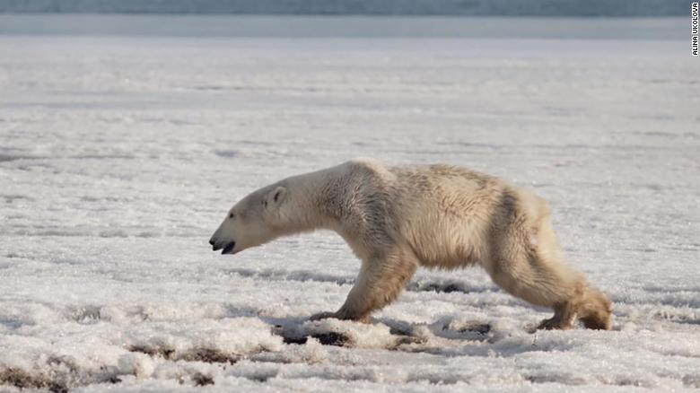
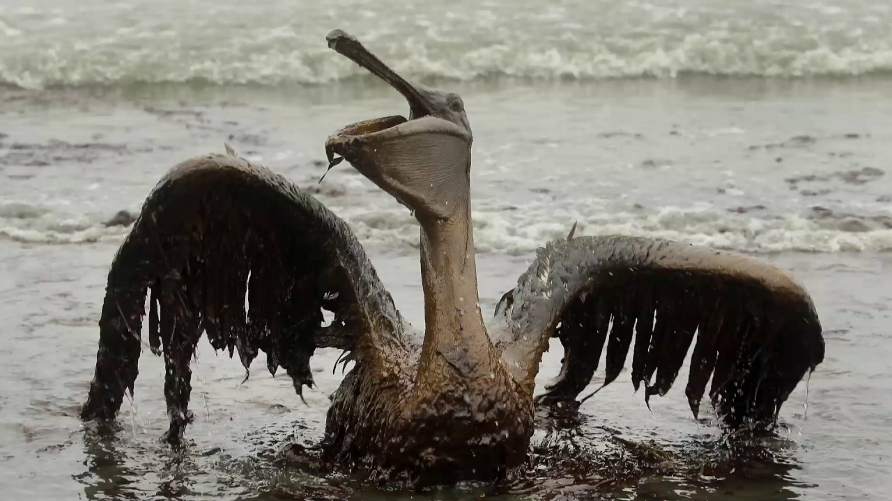
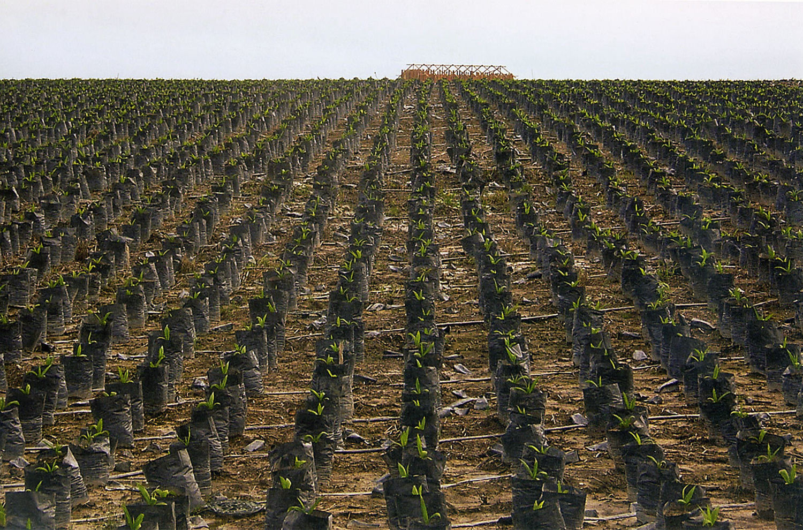
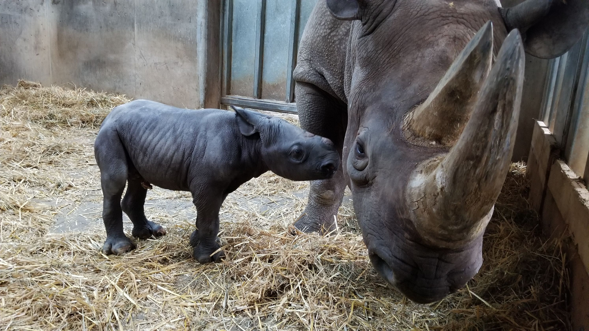
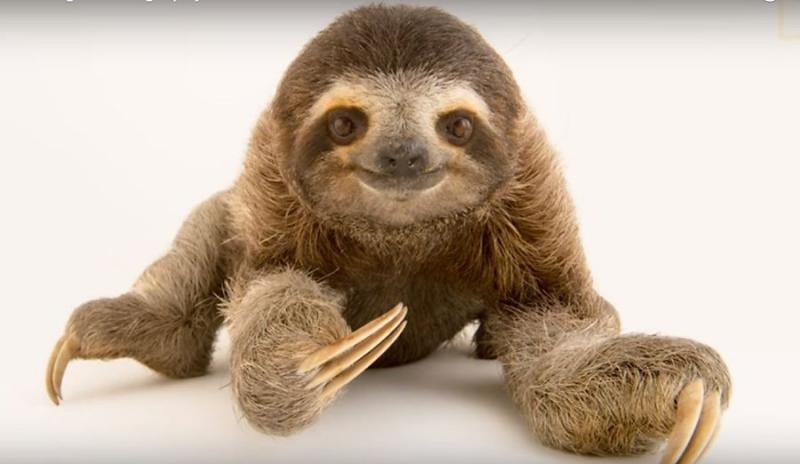
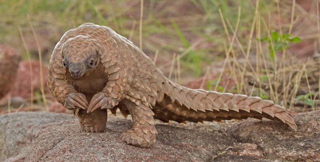

7 Ways You Can Help Stop the Mass Extinction
- Spread the word, to your family, friends, co-workers, and social media circle: the extinction crisis is real.

- Reduce your carbon footprint.

- Buy products from companies committed to using sustainably produced palm oil in their products.

- Never, ever buy anything made from ivory — or from any other product derived from threatened species.

- Enjoy nature.

- Adopt a species.

- Vote for and support leaders who recognize the importance of switching from a fossil-fuel energy system to a carbon-neutral one, who see the necessity of growing crops more efficiently, whose economic agenda includes valuing nature, and who promote women’s rights to education and healthcare.
You can find more information in those sites
- LiveScience
- HiffPost
- ConserveEnergyFuture